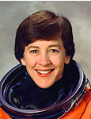

Lyndon B. Johnson Space Center
Houston, Texas 77058
|
National Aeronautics and Space Administration Lyndon B. Johnson Space Center Houston, Texas 77058 |
 |
Biographical Data |
||
Wendy B. Lawrence (Captain, USN)
NASA Astronaut (former)
PERSONAL DATA: Born July 2, 1959, in Jacksonville, Florida.
EDUCATION: Graduated from Fort Hunt High School, Alexandria, Virginia, in 1977; received a bachelor of science degree in ocean engineering from U.S. Naval Academy in 1981; a master of science degree in ocean engineering from Massachusetts Institute of Technology (MIT) and the Woods Hole Oceanographic Institution (WHOI) in 1988.
ORGANIZATIONS: Phi Kappa Phi; Association of Naval Aviation; Women Military Aviators; Naval Helicopter Association.
SPECIAL HONORS: Awarded the Defense Superior Service Medal, the Defense Meritorious Service Medal, the NASA Space Flight Medal, the Navy Commendation Medal and the Navy Achievement Medal. Recipient of the National Navy League’s Captain Winifred Collins Award for inspirational leadership (1986).
EXPERIENCE: Lawrence graduated from the United States Naval Academy in 1981. A distinguished flight school graduate, she was designated as a naval aviator in July 1982. Lawrence has more than 1,500 hours flight time in six different types of helicopters and has made more than 800 shipboard landings. While stationed at Helicopter Combat Support Squadron SIX (HC-6), she was one of the first two female helicopter pilots to make a long deployment to the Indian Ocean as part of a carrier battle group. After completion of a master’s degree program at MIT and WHOI in 1988, she was assigned to Helicopter Anti-Submarine Squadron Light THIRTY (HSL-30) as officer-in-charge of Detachment ALFA. In October 1990, Lawrence reported to the U.S. Naval Academy where she served as a physics instructor and the novice women’s crew coach.
NASA EXPERIENCE: Selected by NASA in March 1992, Lawrence reported to the Johnson Space Center in August 1992. She completed one year of training and is qualified for flight assignment as a mission specialist. To date, her technical assignments within the Astronaut Office have included: flight software verification in the Shuttle Avionics Integration Laboratory (SAIL), Astronaut Office Assistant Training Officer, Director of Operations for NASA at the Gagarin Cosmonaut Training Center in Star City, Russia, and Astronaut Office representative for Space Station training and crew support.
A veteran of four space flights, Lawrence has logged over 1225 hours in space. Lawrence retired from NASA in June 2006.
SPACEFLIGHT EXPERIENCE: STS-67 Endeavour (March 2-18, 1995) was the second flight of the ASTRO observatory, a unique complement of three telescopes. During this 16-day mission, the crew conducted observations around the clock to study the far ultraviolet spectra of faint astronomical objects and the polarization of ultraviolet light coming from hot stars and distant galaxies. Mission duration was 399 hours and 9 minutes.
STS-86 Atlantis (September 25-October 6, 1997) was the seventh mission to rendezvous and dock with the Russian Space Station Mir. Highlights included the exchange of U.S. crew members Mike Foale and David Wolf, a spacewalk by Scott Parazynski and Vladimir Titov to retrieve four experiments first deployed on Mir during the STS-76 docking mission, the transfer to Mir of 10,400 pounds of science and logistics, and the return of experiment hardware and results to Earth. Mission duration was 169 orbits in 259 hours and 21 minutes.
STS-91 Discovery (June 2-12, 1998) was the 9th and final Shuttle-Mir docking mission and marked the conclusion of the joint U.S./Russian Phase I Program. Mission duration was 235 hours and 54 minutes.
STS-114 Discovery (July 26-August 9, 2005) was the Shuttle Return to Flight mission which evaluated new procedures for Shuttle inspection and tested repair techniques. Discovery docked with the International Space Station and transferred over 11,000 pounds of cargo. Mission duration was 333 hours and 32 minutes.
AUGUST 2006